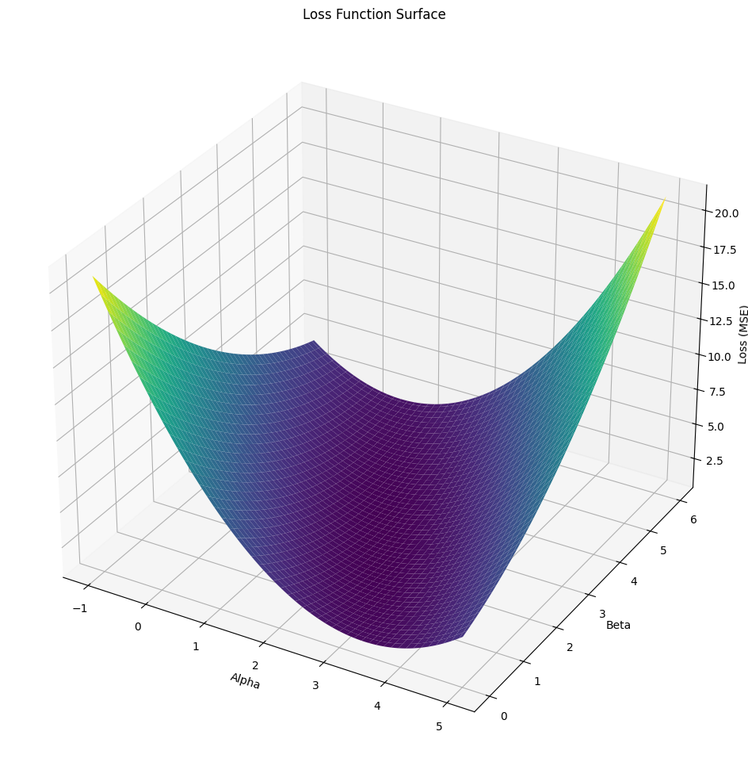

from manim import *Logistic Regression
We use this for binary classification problem. Given \(x\), we want \(\hat{y} = P(y = 1 | x)\)
- x is a feature vector where \(x \in \mathbb{R^{n_x}}\) and b is a bias term \(b \in \mathbb{R}\)
- One choice of modeling it will be to use a linear model: \(\hat{y} = (w^T x + b)\) where \(w \in \mathbb{R^{n_x}}\)
- The problem is ouput can range from \(-\infty\) to \(+\infty\) which is not what we want.
- Now consider the sigmoid function: \(\sigma(z) = \frac{1}{1 + e^{-z}}\)
- This function maps any real number to the range (0, 1)
- We can use this function to model \(P(y = 1 | x)\) as \(\hat{y} = \sigma(w^T x + b)\)
# %%manim -qm -v WARNING SquareToCircle
# class SquareToCircle(Scene):
# def construct(self):
# square = Square()
# circle = Circle()
# circle.set_fill(BLUE, opacity=0.5)
# self.play(Create(square))
# self.play(Transform(square, circle))
# self.wait()
%%manim -qm -v WARNING LogisticLossSurface
class LogisticLossSurface(ThreeDScene):
def construct(self):
#self.set_camera_orientation(phi=75 * DEGREES, theta=30 * DEGREES)
# Define axes
# axes = ThreeDAxes(
# x_range=[-3, 3, 1],
# y_range=[-3, 3, 1],
# z_range=[0, 100, 0.5],
# x_length=7,
# y_length=7,
# z_length=4,
# )
axes = ThreeDAxes()
self.add(axes)
# Define logistic loss function
def logistic_loss(x, y):
z = 0.5 * x + 0.5 * y
p = 1 / (1 + np.exp(-z))
return -np.log(p)
def parabolic_func(x, y):
return 0.3 * x**2 + 0.5 * y**2
# Create the surface plot
surface = Surface(
lambda u, v: axes.c2p(u, v, parabolic_func(u, v)),
u_range=[-20, 20],
v_range=[-20, 20],
resolution=(50, 50),
fill_opacity=0.75
)
surface.set_color_by_gradient(BLUE, GREEN)
self.add(surface)
# Add labels
x_label = axes.get_x_axis_label(Tex("x"), edge=RIGHT, direction=RIGHT).scale(0.7)
y_label = axes.get_y_axis_label(Tex("y"), edge=UP, direction=UP).scale(0.7)
z_label = axes.get_z_axis_label(Tex("Loss"), edge=OUT, direction=OUT).scale(0.7)
self.add(x_label, y_label, z_label)
# # Add interactive rotation
# self.begin_3dillusion_camera_rotation(rate=0.1)
# self.wait(10)
# self.stop_3dillusion_camera_rotation()
self.set_camera_orientation(phi=75 * DEGREES, theta=50 * DEGREES)
self.wait(2)Manim Community v0.18.1
## Let us quickly check how the sigmoid function looks like
import matplotlib.pyplot as plt
import numpy as np
domain_def = np.arange(-10, 10, 0.1)
def sigmoid(x):
return 1/(1+np.exp(-x))
range_def = sigmoid(domain_def)
# Create a new figure with a specific size (width, height)
plt.figure(figsize=(6, 3)) # Adjust the height value as needed
plt.plot(domain_def, range_def)
## add a vertical line at x = 0
plt.axvline(x=0, color='r')
plt.scatter(0, 0.5, color='b')
Notes
- if \(z = w^T x + b\) is large and positive, then \(\sigma(z) = 1\)+
- if \(z = w^T x + b\) is large and negative, then \(\sigma(z) = 0\)
from mpl_toolkits.mplot3d import Axes3D
import numpy as np
import matplotlib.pyplot as plt
# Step 1: Simulate the Data
np.random.seed(42)
x = np.random.rand(100)
epsilon = np.random.randn(100)
y = 2 + 3 * x + epsilon
# Generate a grid of alpha and beta values
alpha_vals = np.linspace(-1, 5, 100)
beta_vals = np.linspace(0, 6, 100)
alpha_grid, beta_grid = np.meshgrid(alpha_vals, beta_vals)
loss_grid = np.zeros_like(alpha_grid)
# Calculate the loss for each combination of alpha and beta
for i in range(len(alpha_vals)):
for j in range(len(beta_vals)):
alpha_temp = alpha_vals[i]
beta_temp = beta_vals[j]
y_pred_temp = alpha_temp + beta_temp * x
loss_grid[j, i] = np.mean((y - y_pred_temp) ** 2)
# Plot the loss function in 3D
fig = plt.figure(figsize=(12, 12))
ax = fig.add_subplot(111, projection='3d')
ax.plot_surface(alpha_grid, beta_grid, loss_grid, cmap='viridis')
ax.set_xlabel('Alpha')
ax.set_ylabel('Beta')
ax.set_zlabel('Loss (MSE)')
ax.set_title('Loss Function Surface')
plt.show()
np.random.rand(100)array([0.7948113 , 0.50263709, 0.57690388, 0.49251769, 0.19524299,
0.72245212, 0.28077236, 0.02431597, 0.6454723 , 0.17711068,
0.94045858, 0.95392858, 0.91486439, 0.3701587 , 0.01545662,
0.92831856, 0.42818415, 0.96665482, 0.96361998, 0.85300946,
0.29444889, 0.38509773, 0.85113667, 0.31692201, 0.16949275,
0.55680126, 0.93615477, 0.6960298 , 0.57006117, 0.09717649,
0.61500723, 0.99005385, 0.14008402, 0.51832965, 0.87737307,
0.74076862, 0.69701574, 0.70248408, 0.35949115, 0.29359184,
0.80936116, 0.81011339, 0.86707232, 0.91324055, 0.5113424 ,
0.50151629, 0.79829518, 0.64996393, 0.70196688, 0.79579267,
0.89000534, 0.33799516, 0.37558295, 0.09398194, 0.57828014,
0.03594227, 0.46559802, 0.54264463, 0.28654125, 0.59083326,
0.03050025, 0.03734819, 0.82260056, 0.36019064, 0.12706051,
0.52224326, 0.76999355, 0.21582103, 0.62289048, 0.08534746,
0.05168172, 0.53135463, 0.54063512, 0.6374299 , 0.72609133,
0.97585208, 0.51630035, 0.32295647, 0.79518619, 0.27083225,
0.43897142, 0.07845638, 0.02535074, 0.96264841, 0.83598012,
0.69597421, 0.40895294, 0.17329432, 0.15643704, 0.2502429 ,
0.54922666, 0.71459592, 0.66019738, 0.2799339 , 0.95486528,
0.73789692, 0.55435405, 0.61172075, 0.41960006, 0.24773099])x = np.random.rand(100)
1 / (1 + np.exp(-2 - 3 * x))array([0.91901028, 0.98640724, 0.9792584 , 0.90915559, 0.9048505 ,
0.98374406, 0.90187989, 0.98863268, 0.98399511, 0.90413575,
0.90503912, 0.99303535, 0.95782399, 0.95738203, 0.98832312,
0.99216855, 0.99302209, 0.98607621, 0.95806435, 0.90469384,
0.98702205, 0.97528243, 0.9634791 , 0.99115539, 0.9116212 ,
0.97005166, 0.88432713, 0.96789096, 0.89742265, 0.91344584,
0.91313898, 0.98106508, 0.9857709 , 0.97702502, 0.99250888,
0.95789662, 0.94568639, 0.99010516, 0.93528072, 0.99253226,
0.88457266, 0.99267883, 0.89373561, 0.99074625, 0.97296204,
0.99316537, 0.90215394, 0.97495123, 0.99266625, 0.97259637,
0.97992884, 0.9834917 , 0.96654812, 0.97981995, 0.9770886 ,
0.99101768, 0.8943853 , 0.94494997, 0.99224194, 0.99072203,
0.96665617, 0.97937474, 0.94438829, 0.92853256, 0.96742508,
0.95521472, 0.97704436, 0.90319186, 0.99277663, 0.99302645,
0.98360882, 0.97361677, 0.94924144, 0.98835753, 0.9829464 ,
0.92328572, 0.99127484, 0.98865549, 0.9922278 , 0.98488978,
0.97896371, 0.96284268, 0.99182273, 0.99003037, 0.89432076,
0.88885524, 0.95808891, 0.98824509, 0.99304854, 0.92065286,
0.97773869, 0.95861903, 0.9926796 , 0.9892958 , 0.98917471,
0.96789399, 0.96247348, 0.94375881, 0.8974426 , 0.98999056])